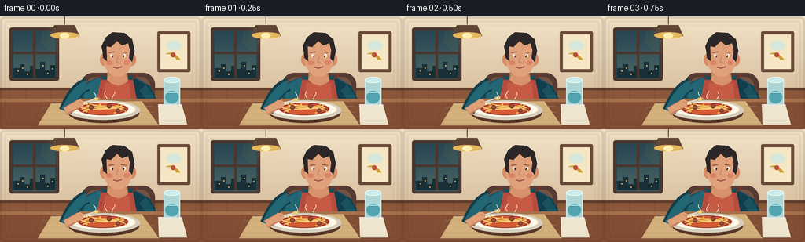
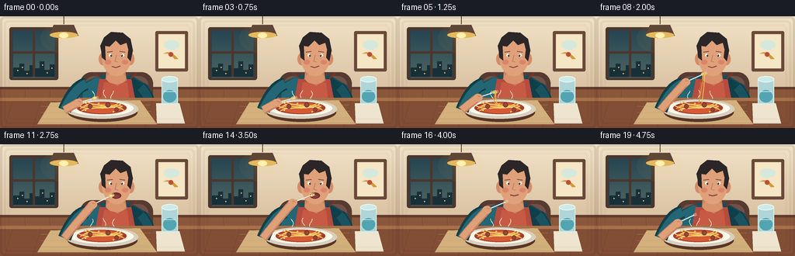

CODING AGENTS AS PIXEL WORLD MODELS
traex/GPT-5.6-Sol · motion_rationality_0005
点击播放 · 原生 RGB 像素
逐轮保存的候选
回放视频、检查图与代码变化。
每份候选均可单独播放。实际图片检查记录在下方工具轨迹中。
候选 01播放与检查图
点击播放 · 原生 RGB 像素


展开代码变化
--- 上一保存版本
+++ 本次保存版本
@@ -0,0 +1,288 @@
+from pathlib import Path
+import math
+import numpy as np
+from PIL import Image, ImageDraw, ImageFilter
+import artifact_io
+
+W, H, N = 256, 144, 20
+S = 4
+
+def sc(v): return int(round(v*S))
+def pts(p): return [(sc(x),sc(y)) for x,y in p]
+
+def ellipse(d, box, fill, outline=None, width=1):
+ d.ellipse(tuple(sc(v) for v in box), fill=fill, outline=outline, width=sc(width) if outline else 1)
+def rect(d, box, fill, outline=None, width=1):
+ d.rectangle(tuple(sc(v) for v in box), fill=fill, outline=outline, width=sc(width) if outline else 1)
+def rr(d, box, radius, fill, outline=None, width=1):
+ d.rounded_rectangle(tuple(sc(v) for v in box), radius=sc(radius), fill=fill, outline=outline, width=sc(width) if outline else 1)
+def poly(d, xy, fill): d.polygon(pts(xy), fill=fill)
+def line(d, xy, fill, width=1, joint='curve'):
+ d.line(pts(xy), fill=fill, width=max(1,sc(width)), joint=joint)
+def bezier(p0,p1,p2,p3=None,n=24):
+ out=[]
+ for i in range(n):
+ t=i/(n-1)
+ if p3 is None:
+ x=(1-t)**2*p0[0]+2*(1-t)*t*p1[0]+t*t*p2[0]
+ y=(1-t)**2*p0[1]+2*(1-t)*t*p1[1]+t*t*p2[1]
+ else:
+ x=(1-t)**3*p0[0]+3*(1-t)**2*t*p1[0]+3*(1-t)*t*t*p2[0]+t**3*p3[0]
+ y=(1-t)**3*p0[1]+3*(1-t)**2*t*p1[1]+3*(1-t)*t*t*p2[1]+t**3*p3[1]
+ out.append((x,y))
+ return out
+
+def lerp(a,b,t): return a+(b-a)*t
+def mixpt(a,b,t): return (lerp(a[0],b[0],t), lerp(a[1],b[1],t))
+def ease(t): return t*t*(3-2*t)
+
+def draw_background(im,d):
+ # warm restaurant wall, softly graded
+ arr=np.array(im)
+ for y in range(sc(0),sc(106)):
+ yy=y/(106*S)
+ c=np.array([241,226,199])*(1-yy)+np.array([215,190,157])*yy
+ arr[y,:,0]=c[0]; arr[y,:,1]=c[1]; arr[y,:,2]=c[2]
+ im.paste(Image.fromarray(arr), (0,0))
+ d=ImageDraw.Draw(im)
+ # wood wainscot and trim
+ rect(d,(0,91,256,106),'#8b573b')
+ rect(d,(0,91,256,94),'#613c2d')
+ for x in range(0,257,32): line(d,[(x,94),(x,106)],'#75452f',0.6)
+ # left evening window
+ rr(d,(12,14,75,82),3,'#49372e')
+ rect(d,(16,18,71,78),'#254651')
+ # sky gradient strips
+ for j in range(60):
+ t=j/59
+ col=(int(40+35*t),int(70+31*t),int(82+18*t))
+ rect(d,(17,19+j,70,20+j),col)
+ # skyline
+ poly(d,[(17,66),(17,78),(70,78),(70,62),(64,62),(64,69),(57,69),(57,58),(51,58),(51,67),(45,67),(45,63),(38,63),(38,70),(31,70),(31,61),(25,61),(25,66)],'#182f38')
+ for x,y in [(22,69),(28,65),(34,73),(42,67),(54,62),(60,72),(66,66)]: ellipse(d,(x,y,x+1.4,y+1.4),'#f8c76c')
+ rect(d,(42,18,45,78),'#49372e'); rect(d,(16,45,71,48),'#49372e')
+ # framed pasta print on right
+ rr(d,(200,19,242,71),2,'#6a4938')
+ rect(d,(204,23,238,67),'#f5e6c5')
+ ellipse(d,(211,31,231,43),'#d5e8dc')
+ for k in range(5):
+ line(d,bezier((211+k*1.5,48),(219,43+k),(229-k,55)), '#cf9c35',.7)
+ ellipse(d,(217,46,223,52),'#bd4e35')
+ # hanging lamp glow
+ glow=Image.new('RGBA',im.size,(0,0,0,0)); gd=ImageDraw.Draw(glow)
+ for r,a in [(30,10),(22,15),(15,20)]: gd.ellipse((sc(82-r),sc(18-r/3),sc(82+r),sc(18+r)),fill=(255,202,96,a))
+ im.alpha_composite(glow)
+ d=ImageDraw.Draw(im)
+ line(d,[(82,0),(82,10)],'#49362c',1)
+ poly(d,[(69,11),(95,11),(101,25),(63,25)],'#604637')
+ ellipse(d,(64,20,100,28),'#e4b85c')
+ ellipse(d,(76,21,88,28),'#fff0b0')
+ # chair silhouette behind diner
+ rr(d,(103,72,197,139),15,'#553b32')
+ rr(d,(109,77,191,139),12,'#755044')
+
+
+def draw_person(d, frame):
+ # subtle breathing, fixed head keeps action legible
+ breath=0.65*math.sin(frame*math.pi/6)
+ # torso and shoulders behind table
+ poly(d,[(99,144),(103,98),(111,84),(128,76),(169,76),(191,89),(200,144)],'#174f5b')
+ # shirt highlights and seams
+ poly(d,[(108,88),(125,78),(139,84),(126,144),(102,144)],'#236674')
+ poly(d,[(169,78),(188,89),(198,144),(174,144),(159,84)],'#103f4b')
+ line(d,[(149,82),(149,142)],'#123c46',1)
+ # apron
+ poly(d,[(128,81),(169,81),(181,144),(116,144)],'#b54c3d')
+ poly(d,[(134,85),(164,85),(170,144),(124,144)],'#c75a45')
+ line(d,[(130,80),(121,73)],'#7f302b',2); line(d,[(168,80),(176,73)],'#7f302b',2)
+ # rear resting arm on viewer right
+ line(d,bezier((181,91),(192,103),(193,116)), '#103f4b',15)
+ line(d,bezier((181,91),(192,103),(193,116)), '#1a5360',11)
+ ellipse(d,(184,110,200,121),'#d99770')
+ # neck
+ poly(d,[(137,68),(161,68),(163,83),(151,89),(136,81)],'#c9825f')
+ ellipse(d,(137,72,162,87),'#d9936c')
+ # ears then face
+ ellipse(d,(127,47,138,63),'#d48c68')
+ ellipse(d,(162,47,173,63),'#d48c68')
+ ellipse(d,(131,25,169,77),'#dfa07a')
+ # cheek warmth
+ ellipse(d,(135,56,143,62),'#dc8469'); ellipse(d,(157,56,165,62),'#dc8469')
+ # hair cap and side locks
+ poly(d,[(131,48),(129,38),(134,27),(143,20),(158,21),(168,29),(171,44),(165,42),(163,34),(155,37),(149,31),(141,39),(135,38)],'#2b2728')
+ poly(d,[(130,39),(135,34),(136,57),(131,53)],'#2b2728')
+ poly(d,[(166,37),(171,44),(168,58),(164,53)],'#2b2728')
+ # eyebrows and eyes, one natural blink at frame 17
+ line(d,[(138,46),(145,45)],'#5b382f',1)
+ line(d,[(154,45),(161,46)],'#5b382f',1)
+ blink = frame==17
+ if blink:
+ line(d,[(139,50),(145,50)],'#47332e',1)
+ line(d,[(155,50),(161,50)],'#47332e',1)
+ else:
+ ellipse(d,(140,48,144,52),'#fff5e4'); ellipse(d,(156,48,160,52),'#fff5e4')
+ ellipse(d,(142,49,144,52),'#342f2d'); ellipse(d,(156,49,158,52),'#342f2d')
+ ellipse(d,(142.3,49.2,143,50),'white'); ellipse(d,(156.3,49.2,157,50),'white')
+ # nose
+ line(d,[(150,50),(148,58),(152,59)],'#b56f56',.8)
+ # mouth changes for bite and chew
+ if 10 <= frame <= 14:
+ ellipse(d,(143,62,156,70),'#6d302f')
+ ellipse(d,(146,65,154,69),'#8e3d3c')
+ elif frame>=15:
+ # pursed chewing mouth, slight left-right movement
+ dx=1.1*math.sin((frame-15)*1.8)
+ line(d,[(144+dx,65),(149+dx,66.2),(155+dx,64.8)],'#813d3a',1.4)
+ else:
+ line(d,[(144,64.5),(149,66),(155,64)],'#8c423d',1.2)
+
+
+def fork_pose(f):
+ if f <= 3:
+ # small circular twirling motion over plate
+ a=f*math.pi/1.5
+ tip=(122+1.3*math.cos(a),105+1.2*math.sin(a))
+ wrist=(100+1.0*math.cos(a),111+0.7*math.sin(a))
+ elif f <= 10:
+ t=ease((f-3)/7)
+ tip=mixpt((122,105),(143.5,66),t)
+ wrist=mixpt((100,111),(119,78),t)
+ elif f <= 14:
+ t=ease((f-10)/4)
+ tip=mixpt((143.5,66),(146,65),t)
+ wrist=mixpt((119,78),(121,75),t)
+ else:
+ t=ease((f-14)/5)
+ tip=mixpt((146,65),(126,91),t)
+ wrist=mixpt((121,75),(105,101),t)
+ return wrist,tip
+
+
+def draw_table_and_food(d, frame):
+ # table and linen, foreground
+ rect(d,(0,105,256,144),'#824e35')
+ rect(d,(0,105,256,109),'#a8714c')
+ for x in range(-20,280,36): line(d,[(x,109),(x-10,144)],'#74432f',.55)
+ # placemat
+ poly(d,[(65,111),(180,108),(202,139),(48,139)],'#d3b07c')
+ for y in (116,124,132): line(d,[(53,y),(194,y-2)],'#c29b69',.45)
+ # plate shadow and plate
+ ellipse(d,(87,111,177,136),'#583627')
+ ellipse(d,(84,107,178,132),'#d7d0be')
+ ellipse(d,(90,109,172,128),'#fff8e8')
+ ellipse(d,(99,110,163,126),'#a33e2e')
+ ellipse(d,(104,111,158,125),'#d55a36')
+ # coherent spaghetti loops on plate
+ gold='#e9ba52'; light='#f5d477'; dark='#c98e32'
+ paths=[[(103,119),(112,110),(132,124),(152,112),(159,119)],
+ [(101,115),(119,125),(139,110),(158,120)],
+ [(108,111),(125,122),(145,111),(158,116)],
+ [(105,122),(120,113),(139,124),(157,112)],
+ [(111,110),(127,118),(144,109),(161,122)],
+ [(108,116),(121,108),(142,122),(157,116)]]
+ for i,p in enumerate(paths): line(d,bezier(p[0],p[1],p[2],p[3] if len(p)>3 else None), light if i%2 else gold,1.35)
+ # meatballs and sauce flecks
+ for x,y,r in [(116,116,3),(139,114,3.2),(150,120,2.7)]:
+ ellipse(d,(x-r,y-r,x+r,y+r),'#74382d'); ellipse(d,(x-r+1,y-r+1,x+r-1,y+r-1),'#9b4833')
+ for x,y in [(110,121),(127,112),(146,123),(154,114)]: ellipse(d,(x-1,y-1,x+1,y+1),'#f0cf55')
+ # napkin and small water glass to right
+ poly(d,[(201,112),(231,112),(238,138),(202,138)],'#efe5ce')
+ rect(d,(208,81,229,113),(176,213,214,105),outline='#d9f1ef',width=1)
+ ellipse(d,(208,77,229,85),(204,235,232,150),outline='#edf9f5')
+ ellipse(d,(210,95,227,111),(83,164,177,110))
+ line(d,[(211,97),(226,97)],'#eaf8f5',.8)
+
+
+def draw_active_arm_and_utensil(d, frame):
+ wrist,tip=fork_pose(frame)
+ # forearm follows wrist rationally from a stable elbow at lower left
+ elbow=(83,121)
+ shoulder=(111,87)
+ # upper sleeve behind exposed forearm
+ line(d,bezier(shoulder,(95,91),elbow), '#123f4a',17)
+ line(d,bezier(shoulder,(96,93),elbow), '#236674',12)
+ # forearm skin from elbow to wrist
+ cx=(elbow[0]+wrist[0])/2-2
+ cy=(elbow[1]+wrist[1])/2+1
+ line(d,bezier(elbow,(cx,cy),wrist), '#c98261',11)
+ line(d,bezier((elbow[0],elbow[1]-1),(cx,cy-1),wrist), '#dfa078',8)
+ # fork shaft first so hand wraps around handle
+ vx=tip[0]-wrist[0]; vy=tip[1]-wrist[1]
+ L=max(1,math.hypot(vx,vy)); nx=-vy/L; ny=vx/L; ux=vx/L; uy=vy/L
+ handle_start=(wrist[0]-ux*4,wrist[1]-uy*4)
+ line(d,[handle_start,tip],'#eef1e7',1.35)
+ line(d,[(handle_start[0]+nx*.6,handle_start[1]+ny*.6),(tip[0]+nx*.6,tip[1]+ny*.6)],'#899da0',.5)
+ # hand and fingers around handle
+ ellipse(d,(wrist[0]-5.8,wrist[1]-4.8,wrist[0]+5.7,wrist[1]+5.2),'#dfa078')
+ line(d,[(wrist[0]-2*nx,wrist[1]-2*ny),(wrist[0]+3*ux,wrist[1]+3*uy)],'#bd795b',1)
+ # fork neck and four tines aligned with shaft
+ base=(tip[0]-ux*1.3,tip[1]-uy*1.3)
+ line(d,[base,tip],'#f2f5ed',2.0)
+ for off in (-1.5,-.5,.5,1.5):
+ a=(tip[0]+nx*off,tip[1]+ny*off)
+ b=(tip[0]+ux*3.4+nx*off,tip[1]+uy*3.4+ny*off)
+ line(d,[a,b],'#e7eeea',.48)
+ # noodles wound around fork; amount reduces during bite
+ amount = 1.0 if frame<=10 else max(.12,1-(frame-10)/5)
+ if frame<=14:
+ for k in range(max(1,int(4*amount))):
+ off=(k-1.5)*0.9
+ center=(tip[0]-ux*(1+k*.3),tip[1]-uy*(1+k*.3))
+ # tiny gold oval wrapping tines
+ ellipse(d,(center[0]-2.8+nx*off*.15,center[1]-2.0,center[0]+2.8+nx*off*.15,center[1]+2.0),None,outline='#f2c75a',width=1)
+ # trailing spaghetti: connected to plate while lifting, then naturally dangling
+ if 4 <= frame <= 9:
+ p=(frame-3)/7
+ end=(126+8*p,112)
+ for j in range(2):
+ start=(tip[0]+nx*(j*1.3-0.7),tip[1]+ny*(j*1.3-0.7))
+ bend=(start[0]-4+j*3,start[1]+17+5*p)
+ path=bezier(start,bend,(end[0]+j*4,end[1]),n=28)
+ line(d,path,'#f1c758' if j else '#db9e38',1.0)
+ elif frame==10:
+ for j in range(2):
+ start=(tip[0]+j*1.2,tip[1])
+ line(d,bezier(start,(tip[0]-4+j*3,tip[1]+10),(tip[0]+j*2,tip[1]+15)), '#efc254',1)
+ elif 11 <= frame <=14:
+ # short strands bridge tines to open mouth; visibly shorten each frame
+ mouth=(145.5,66)
+ remain=max(0,(14-frame)/3)
+ for j in range(2):
+ st=(tip[0]+ux*2.5+nx*(j-.5),tip[1]+uy*2.5+ny*(j-.5))
+ en=(lerp(st[0],mouth[0],remain),lerp(st[1],mouth[1],remain))
+ line(d,bezier(st,((st[0]+en[0])/2,st[1]+3),(en[0],en[1])), '#f1c758',.9)
+
+
+def steam(d, frame):
+ # subtle drifting steam above the hot plate
+ for k in range(3):
+ phase=frame*.45+k*2.1
+ x=120+k*13+math.sin(phase)*2
+ y0=106-k%2
+ path=[]
+ for q in range(12):
+ y=y0-q*.9
+ path.append((x+math.sin(phase+q*.35)*1.8,y))
+ line(d,path,(255,247,224,100),.65)
+
+
+def render(frame):
+ im=Image.new('RGBA',(W*S,H*S),(239,221,194,255))
+ d=ImageDraw.Draw(im,'RGBA')
+ draw_background(im,d)
+ d=ImageDraw.Draw(im,'RGBA')
+ draw_person(d,frame)
+ draw_table_and_food(d,frame)
+ steam(d,frame)
+ draw_active_arm_and_utensil(d,frame)
+ # cinematic soft vignette
+ over=Image.new('RGBA',im.size,(0,0,0,0)); od=ImageDraw.Draw(over)
+ for i,a in [(0,28),(5,14),(10,7)]:
+ od.rounded_rectangle((sc(i),sc(i),sc(W-i),sc(H-i)),radius=sc(6),outline=(45,25,20,a),width=sc(3))
+ im=Image.alpha_composite(im,over)
+ im=im.convert('RGB').resize((W,H),Image.Resampling.LANCZOS)
+ return np.asarray(im,dtype=np.uint8)
+
+frames=np.stack([render(i) for i in range(N)])
+artifact_io.save(frames,Path(__file__).resolve().parent)
+print('saved',frames.shape,frames.dtype)
可观测工具轨迹
实际执行的命令与返回图片。
命令 1exit 0
/bin/bash -lc "cat prompt.txt && printf '\\n---RULES---\\n' && cat GENERATION_RULES.md && printf '\\n---SPEC---\\n' && cat task_spec.json"
命令 2exit 0
/bin/bash -lc "find . -maxdepth 2 -type f -printf '%p\\n' | sort"
命令 3exit 0
/bin/bash -lc 'cat artifact_io.py'
命令 4exit 1
/bin/bash -lc "cat > generate.py <<'PY'
from pathlib import Path
import math
import numpy as np
from PIL import Image, ImageDraw, ImageFilter
import artifact_io
W, H, N = 256, 144, 20
S = 4
def sc(v): return int(round(v*S))
def pts(p): return [(sc(x),sc(y)) for x,y in p]
def ellipse(d, box, fill, outline=None, width=1):
d.ellipse(tuple(sc(v) for v in box), fill=fill, outline=outline, width=sc(width) if outline else 1)
def rect(d, box, fill, outline=None, width=1):
d.rectangle(tuple(sc(v) for v in box), fill=fill, outline=outline, width=sc(width) if outline else 1)
def rr(d, box, radius, fill, outline=None, width=1):
d.rounded_rectangle(tuple(sc(v) for v in box), radius=sc(radius), fill=fill, outline=outline, width=sc(width) if outline else 1)
def poly(d, xy, fill): d.polygon(pts(xy), fill=fill)
def line(d, xy, fill, width=1, joint='curve'):
d.line(pts(xy), fill=fill, width=max(1,sc(width)), joint=joint)
def bezier(p0,p1,p2,p3=None,n=24):
out=[]
for i in range(n):
t=i/(n-1)
if p3 is None:
x=(1-t)**2*p0[0]+2*(1-t)*t*p1[0]+t*t*p2[0]
y=(1-t)**2*p0[1]+2*(1-t)*t*p1[1]+t*t*p2[1]
else:
x=(1-t)**3*p0[0]+3*(1-t)**2*t*p1[0]+3*(1-t)*t*t*p2[0]+t**3*p3[0]
y=(1-t)**3*p0[1]+3*(1-t)**2*t*p1[1]+3*(1-t)*t*t*p2[1]+t**3*p3[1]
out.append((x,y))
return out
def lerp(a,b,t): return a+(b-a)*t
def mixpt(a,b,t): return (lerp(a[0],b[0],t), lerp(a[1],b[1],t))
def ease(t): return t*t*(3-2*t)
def draw_background(im,d):
# warm restaurant wall, softly graded
arr=np.asarray(im)
for y in range(sc(0),sc(106)):
yy=y/(106*S)
c=np.array([241,226,199])*(1-yy)+np.array([215,190,157])*yy
arr[y,:,0]=c[0]; arr[y,:,1]=c[1]; arr[y,:,2]=c[2]
im.paste(Image.fromarray(arr), (0,0))
d=ImageDraw.Draw(im)
# wood wainscot and trim
rect(d,(0,91,256,106),'#8b573b')
rect(d,(0,91,256,94),'#613c2d')
for x in range(0,257,32): line(d,[(x,94),(x,106)],'#75452f',0.6)
# left evening window
rr(d,(12,14,75,82),3,'#49372e')
rect(d,(16,18,71,78),'#254651')
# sky gradient strips
for j in range(60):
t=j/59
col=(int(40+35*t),int(70+31*t),int(82+18*t))
rect(d,(17,19+j,70,20+j),col)
# skyline
poly(d,[(17,66),(17,78),(70,78),(70,62),(64,62),(64,69),(57,69),(57,58),(51,58),(51,67),(45,67),(45,63),(38,63),(38,70),(31,70),(31,61),(25,61),(25,66)],'#182f38')
for x,y in [(22,69),(28,65),(34,73),(42,67),(54,62),(60,72),(66,66)]: ellipse(d,(x,y,x+1.4,y+1.4),'#f8c76c')
rect(d,(42,18,45,78),'#49372e'); rect(d,(16,45,71,48),'#49372e')
# framed pasta print on right
rr(d,(200,19,242,71),2,'#6a4938')
rect(d,(204,23,238,67),'#f5e6c5')
ellipse(d,(211,31,231,43),'#d5e8dc')
for k in range(5):
line(d,bezier((211+k*1.5,48),(219,43+k),(229-k,55)), '#cf9c35',.7)
ellipse(d,(217,46,223,52),'#bd4e35')
# hanging lamp glow
glow=Image.new('RGBA',im.size,(0,0,0,0)); gd=ImageDraw.Draw(glow)
for r,a in [(30,10),(22,15),(15,20)]: gd.ellipse((sc(82-r),sc(18-r/3),sc(82+r),sc(18+r)),fill=(255,202,96,a))
im.alpha_composite(glow)
d=ImageDraw.Draw(im)
line(d,[(82,0),(82,10)],'#49362c',1)
poly(d,[(69,11),(95,11),(101,25),(63,25)],'#604637')
ellipse(d,(64,20,100,28),'#e4b85c')
ellipse(d,(76,21,88,28),'#fff0b0')
# chair silhouette behind diner
rr(d,(103,72,197,139),15,'#553b32')
rr(d,(109,77,191,139),12,'#755044')
def draw_person(d, frame):
# subtle breathing, fixed head keeps action legible
breath=0.65*math.sin(frame*math.pi/6)
# torso and shoulders behind table
poly(d,[(99,144),(103,98),(111,84),(128,76),(169,76),(191,89),(200,144)],'#174f5b')
# shirt highlights and seams
poly(d,[(108,88),(125,78),(139,84),(126,144),(102,144)],'#236674')
poly(d,[(169,78),(188,89),(198,144),(174,144),(159,84)],'#103f4b')
line(d,[(149,82),(149,142)],'#123c46',1)
# apron
poly(d,[(128,81),(169,81),(181,144),(116,144)],'#b54c3d')
poly(d,[(134,85),(164,85),(170,144),(124,144)],'#c75a45')
line(d,[(130,80),(121,73)],'#7f302b',2); line(d,[(168,80),(176,73)],'#7f302b',2)
# rear resting arm on viewer right
line(d,bezier((181,91),(192,103),(193,116)), '#103f4b',15)
line(d,bezier((181,91),(192,103),(193,116)), '#1a5360',11)
ellipse(d,(184,110,200,121),'#d99770')
# neck
poly(d,[(137,68),(161,68),(163,83),(151,89),(136,81)],'#c9825f')
ellipse(d,(137,72,162,87),'#d9936c')
# ears then face
ellipse(d,(127,47,138,63),'#d48c68')
ellipse(d,(162,47,173,63),'#d48c68')
ellipse(d,(131,25,169,77),'#dfa07a')
# cheek warmth
ellipse(d,(135,56,143,62),'#dc8469'); ellipse(d,(157,56,165,62),'#dc8469')
# hair cap and side locks
poly(d,[(131,48),(129,38),(134,27),(143,20),(158,21),(168,29),(171,44),(165,42),(163,34),(155,37),(149,31),(141,39),(135,38)],'#2b2728')
poly(d,[(130,39),(135,34),(136,57),(131,53)],'#2b2728')
poly(d,[(166,37),(171,44),(168,58),(164,53)],'#2b2728')
# eyebrows and eyes, one natural blink at frame 17
line(d,[(138,46),(145,45)],'#5b382f',1)
line(d,[(154,45),(161,46)],'#5b382f',1)
blink = frame==17
if blink:
line(d,[(139,50),(145,50)],'#47332e',1)
line(d,[(155,50),(161,50)],'#47332e',1)
else:
ellipse(d,(140,48,144,52),'#fff5e4'); ellipse(d,(156,48,160,52),'#fff5e4')
ellipse(d,(142,49,144,52),'#342f2d'); ellipse(d,(156,49,158,52),'#342f2d')
ellipse(d,(142.3,49.2,143,50),'white'); ellipse(d,(156.3,49.2,157,50),'white')
# nose
line(d,[(150,50),(148,58),(152,59)],'#b56f56',.8)
# mouth changes for bite and chew
if 10 <= frame <= 14:
ellipse(d,(143,62,156,70),'#6d302f')
ellipse(d,(146,65,154,69),'#8e3d3c')
elif frame>=15:
# pursed chewing mouth, slight left-right movement
dx=1.1*math.sin((frame-15)*1.8)
line(d,[(144+dx,65),(149+dx,66.2),(155+dx,64.8)],'#813d3a',1.4)
else:
line(d,[(144,64.5),(149,66),(155,64)],'#8c423d',1.2)
def fork_pose(f):
if f <= 3:
# small circular twirling motion over plate
a=f*math.pi/1.5
tip=(122+1.3*math.cos(a),105+1.2*math.sin(a))
wrist=(100+1.0*math.cos(a),111+0.7*math.sin(a))
elif f <= 10:
t=ease((f-3)/7)
tip=mixpt((122,105),(143.5,66),t)
wrist=mixpt((100,111),(119,78),t)
elif f <= 14:
t=ease((f-10)/4)
tip=mixpt((143.5,66),(146,65),t)
wrist=mixpt((119,78),(121,75),t)
else:
t=ease((f-14)/5)
tip=mixpt((146,65),(126,91),t)
wrist=mixpt((121,75),(105,101),t)
return wrist,tip
def draw_table_and_food(d, frame):
# table and linen, foreground
rect(d,(0,105,256,144),'#824e35')
rect(d,(0,105,256,109),'#a8714c')
for x in range(-20,280,36): line(d,[(x,109),(x-10,144)],'#74432f',.55)
# placemat
poly(d,[(65,111),(180,108),(202,139),(48,139)],'#d3b07c')
for y in (116,124,132): line(d,[(53,y),(194,y-2)],'#c29b69',.45)
# plate shadow and plate
ellipse(d,(87,111,177,136),'#583627')
ellipse(d,(84,107,178,132),'#d7d0be')
ellipse(d,(90,109,172,128),'#fff8e8')
ellipse(d,(99,110,163,126),'#a33e2e')
ellipse(d,(104,111,158,125),'#d55a36')
# coherent spaghetti loops on plate
gold='#e9ba52'; light='#f5d477'; dark='#c98e32'
paths=[[(103,119),(112,110),(132,124),(152,112),(159,119)],
[(101,115),(119,125),(139,110),(158,120)],
[(108,111),(125,122),(145,111),(158,116)],
[(105,122),(120,113),(139,124),(157,112)],
[(111,110),(127,118),(144,109),(161,122)],
[(108,116),(121,108),(142,122),(157,116)]]
for i,p in enumerate(paths): line(d,bezier(p[0],p[1],p[2],p[3] if len(p)>3 else None), light if i%2 else gold,1.35)
# meatballs and sauce flecks
for x,y,r in [(116,116,3),(139,114,3.2),(150,120,2.7)]:
ellipse(d,(x-r,y-r,x+r,y+r),'#74382d'); ellipse(d,(x-r+1,y-r+1,x+r-1,y+r-1),'#9b4833')
for x,y in [(110,121),(127,112),(146,123),(154,114)]: ellipse(d,(x-1,y-1,x+1,y+1),'#f0cf55')
# napkin and small water glass to right
poly(d,[(201,112),(231,112),(238,138),(202,138)],'#efe5ce')
rect(d,(208,81,229,113),(176,213,214,105),outline='#d9f1ef',width=1)
ellipse(d,(208,77,229,85),(204,235,232,150),outline='#edf9f5')
ellipse(d,(210,95,227,111),(83,164,177,110))
line(d,[(211,97),(226,97)],'#eaf8f5',.8)
def draw_active_arm_and_utensil(d, frame):
wrist,tip=fork_pose(frame)
# forearm follows wrist rationally from a stable elbow at lower left
elbow=(83,121)
shoulder=(111,87)
# upper sleeve behind exposed forearm
line(d,bezier(shoulder,(95,91),elbow), '#123f4a',17)
line(d,bezier(shoulder,(96,93),elbow), '#236674',12)
# forearm skin from elbow to wrist
cx=(elbow[0]+wrist[0])/2-2
cy=(elbow[1]+wrist[1])/2+1
line(d,bezier(elbow,(cx,cy),wrist), '#c98261',11)
line(d,bezier((elbow[0],elbow[1]-1),(cx,cy-1),wrist), '#dfa078',8)
# fork shaft first so hand wraps around handle
vx=tip[0]-wrist[0]; vy=tip[1]-wrist[1]
L=max(1,math.hypot(vx,vy)); nx=-vy/L; ny=vx/L; ux=vx/L; uy=vy/L
handle_start=(wrist[0]-ux*4,wrist[1]-uy*4)
line(d,[handle_start,tip],'#eef1e7',1.35)
line(d,[(handle_start[0]+nx*.6,handle_start[1]+ny*.6),(tip[0]+nx*.6,tip[1]+ny*.6)],'#899da0',.5)
# hand and fingers around handle
ellipse(d,(wrist[0]-5.8,wrist[1]-4.8,wrist[0]+5.7,wrist[1]+5.2),'#dfa078')
line(d,[(wrist[0]-2*nx,wrist[1]-2*ny),(wrist[0]+3*ux,wrist[1]+3*uy)],'#bd795b',1)
# fork neck and four tines aligned with shaft
base=(tip[0]-ux*1.3,tip[1]-uy*1.3)
line(d,[base,tip],'#f2f5ed',2.0)
for off in (-1.5,-.5,.5,1.5):
a=(tip[0]+nx*off,tip[1]+ny*off)
b=(tip[0]+ux*3.4+nx*off,tip[1]+uy*3.4+ny*off)
line(d,[a,b],'#e7eeea',.48)
# noodles wound around fork; amount reduces during bite
amount = 1.0 if frame<=10 else max(.12,1-(frame-10)/5)
if frame<=14:
for k in range(max(1,int(4*amount))):
off=(k-1.5)*0.9
center=(tip[0]-ux*(1+k*.3),tip[1]-uy*(1+k*.3))
# tiny gold oval wrapping tines
ellipse(d,(center[0]-2.8+nx*off*.15,center[1]-2.0,center[0]+2.8+nx*off*.15,center[1]+2.0),None,outline='#f2c75a',width=1)
# trailing spaghetti: connected to plate while lifting, then naturally dangling
if 4 <= frame <= 9:
p=(frame-3)/7
end=(126+8*p,112)
for j in range(2):
start=(tip[0]+nx*(j*1.3-0.7),tip[1]+ny*(j*1.3-0.7))
bend=(start[0]-4+j*3,start[1]+17+5*p)
path=bezier(start,bend,(end[0]+j*4,end[1]),n=28)
line(d,path,'#f1c758' if j else '#db9e38',1.0)
elif frame==10:
for j in range(2):
start=(tip[0]+j*1.2,tip[1])
line(d,bezier(start,(tip[0]-4+j*3,tip[1]+10),(tip[0]+j*2,tip[1]+15)), '#efc254',1)
elif 11 <= frame <=14:
# short strands bridge tines to open mouth; visibly shorten each frame
mouth=(145.5,66)
remain=max(0,(14-frame)/3)
for j in range(2):
st=(tip[0]+ux*2.5+nx*(j-.5),tip[1]+uy*2.5+ny*(j-.5))
en=(lerp(st[0],mouth[0],remain),lerp(st[1],mouth[1],remain))
line(d,bezier(st,((st[0]+en[0])/2,st[1]+3),(en[0],en[1])), '#f1c758',.9)
def steam(d, frame):
# subtle drifting steam above the hot plate
for k in range(3):
phase=frame*.45+k*2.1
x=120+k*13+math.sin(phase)*2
y0=106-k%2
path=[]
for q in range(12):
y=y0-q*.9
path.append((x+math.sin(phase+q*.35)*1.8,y))
line(d,path,(255,247,224,100),.65)
def render(frame):
im=Image.new('RGBA',(W*S,H*S),(239,221,194,255))
d=ImageDraw.Draw(im,'RGBA')
draw_background(im,d)
d=ImageDraw.Draw(im,'RGBA')
draw_person(d,frame)
draw_table_and_food(d,frame)
steam(d,frame)
draw_active_arm_and_utensil(d,frame)
# cinematic soft vignette
over=Image.new('RGBA',im.size,(0,0,0,0)); od=ImageDraw.Draw(over)
for i,a in [(0,28),(5,14),(10,7)]:
od.rounded_rectangle((sc(i),sc(i),sc(W-i),sc(H-i)),radius=sc(6),outline=(45,25,20,a),width=sc(3))
im=Image.alpha_composite(im,over)
im=im.convert('RGB').resize((W,H),Image.Resampling.LANCZOS)
return np.asarray(im,dtype=np.uint8)
frames=np.stack([render(i) for i in range(N)])
artifact_io.save(frames,Path(__file__).resolve().parent)
print('saved',frames.shape,frames.dtype)
PY
python generate.py"命令 5exit 0
/bin/bash -lc "python - <<'PY'
p='generate.py'
s=open(p).read().replace('arr=np.asarray(im)','arr=np.array(im)')
open(p,'w').write(s)
PY
python generate.py"命令 6exit 0
/bin/bash -lc "python - <<'PY'
from pathlib import Path
import numpy as np
p=Path('.')
z=np.load('pixels.npz')['pixels']
print('pixels',z.shape,z.dtype,'frames',len(list((p/'frames').glob('*.png'))))
print('artifacts',[(f.name,f.stat().st_size) for f in [p/'pixels.npz',p/'index.html',p/'inspection.png',p/'transition_check.png',p/'generate.py']])
PY"视觉工具实际返回图片 1

保存候选 1 份；完成命令 6 次；可验证图片返回 1 张。原始 API 响应与完整日志保留在本地。